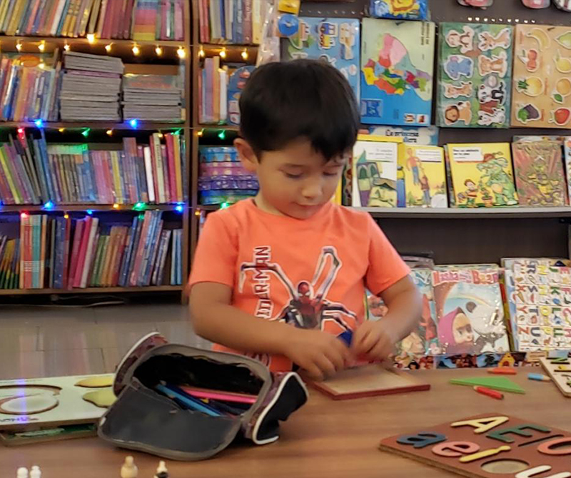
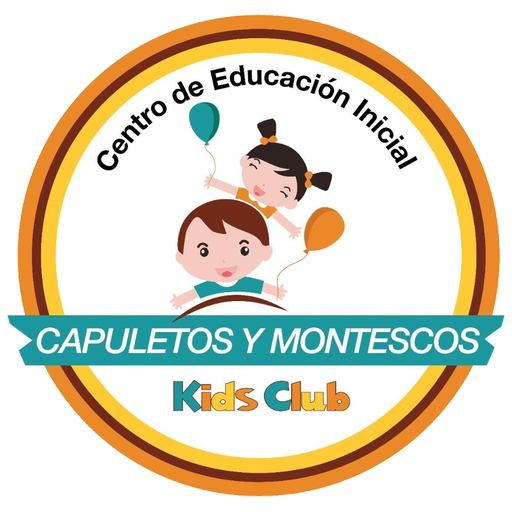
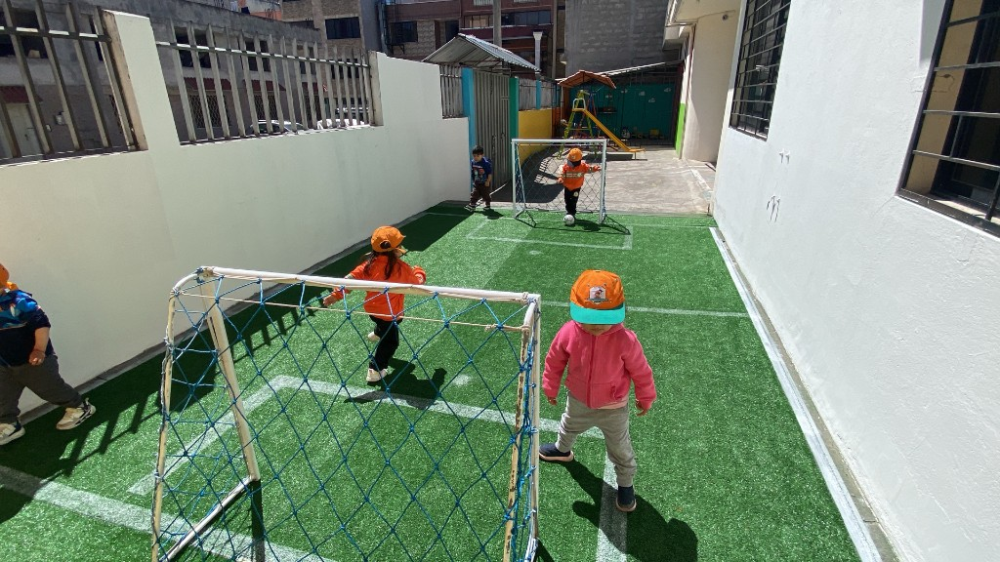
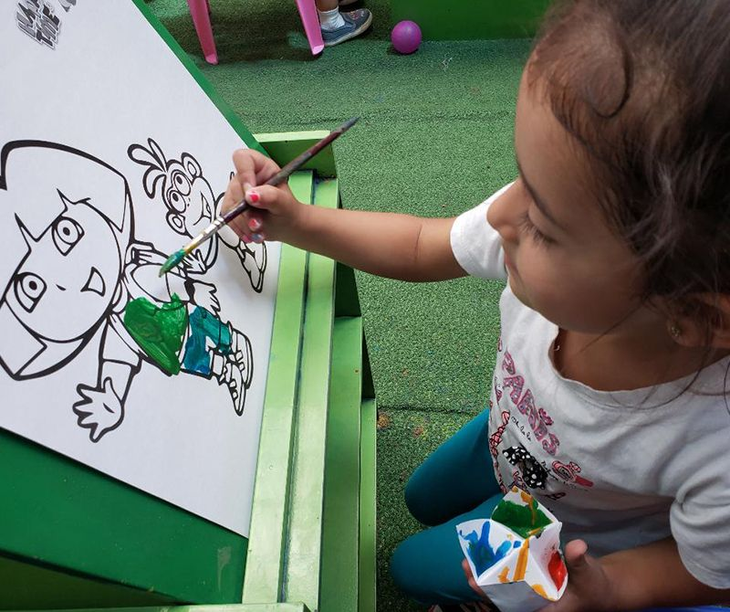
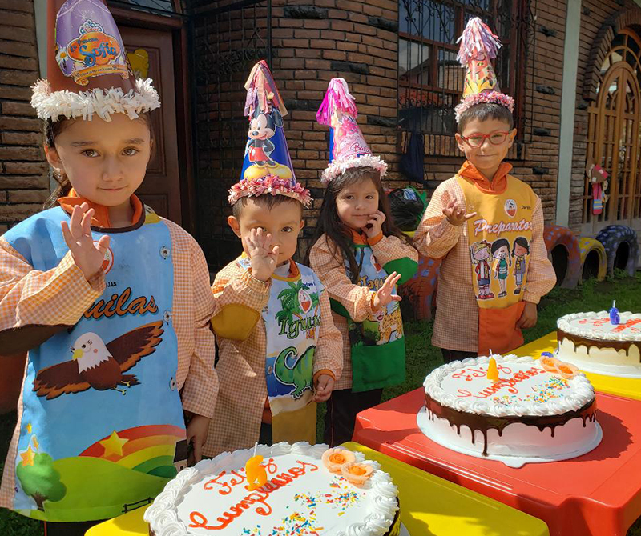
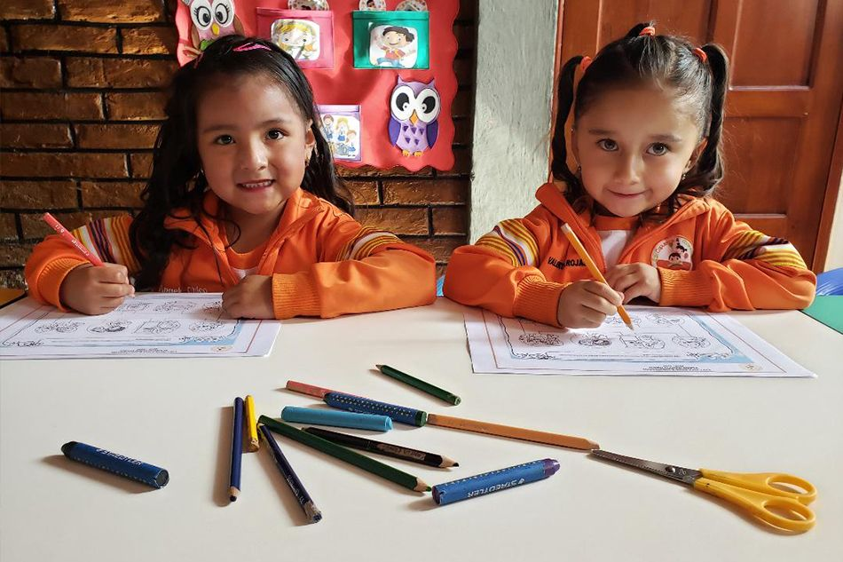
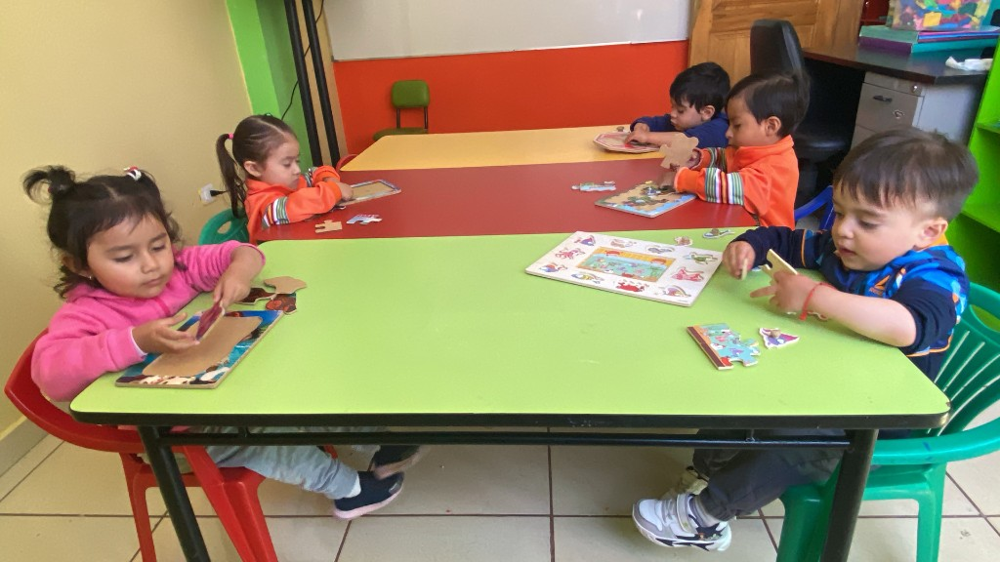
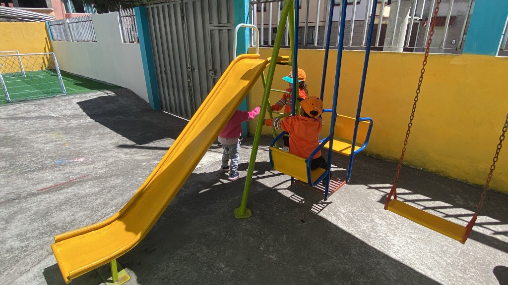

Maternal
Cuidado cercano y actividades acordes a los primeros momentos del desarrollo.
Consultar ↗
Escribir por WhatsApp ↗
Matrículas abiertas · Ciclo 2026-2027
Capuletos y Montescos Kid Club es el centro de educación inicial en Quitumbe: estimulación Inicial 1 y 2, con horario regular y extendido.
01 / Oferta
Maternal, Estimulación Temprana, Inicial 1 e Inicial 2, con servicios adicionales para acompañar a cada familia.

Cuidado cercano y actividades acordes a los primeros momentos del desarrollo.
Consultar ↗
De 1 a 3 años. Juego, exploración y actividades para acompañar cada etapa.
Consultar ↗
De 3 a 4 años. Una aventura de arte, música, juego y descubrimiento.
Consultar ↗De 4 a 5 años. Preparación para nuevos retos y aprendizajes escolares.
Consultar ↗Programas por edades
1 a 3 años
Acompañamos cada etapa de tu pequeño con amor y dedicación.
3 a 4 años
¡Aprender también puede ser una aventura!
4 a 5 años
¡Preparamos a nuestros niños para nuevos retos!
Servicios complementarios
02 / Cómo empezamos
El primer paso es WhatsApp. Desde ahí coordinamos conocer el centro.
Cuéntanos la edad y si buscas Maternal, Estimulación Temprana, Inicial 1, Inicial 2 o un servicio extra.
Te recibimos en Quitumbe, Blanca Benítez y Amauta, para que conozcas el espacio y el equipo.
Si el centro encaja, te explicamos el siguiente paso para inscribirse.
03 / Quitumbe



04 / Preguntas frecuentes
05 / Contacto
Escríbenos ahora y coordinamos la visita en Quitumbe.
Hablemos por WhatsApp ↗ Cómo llegar en Google Maps ↗